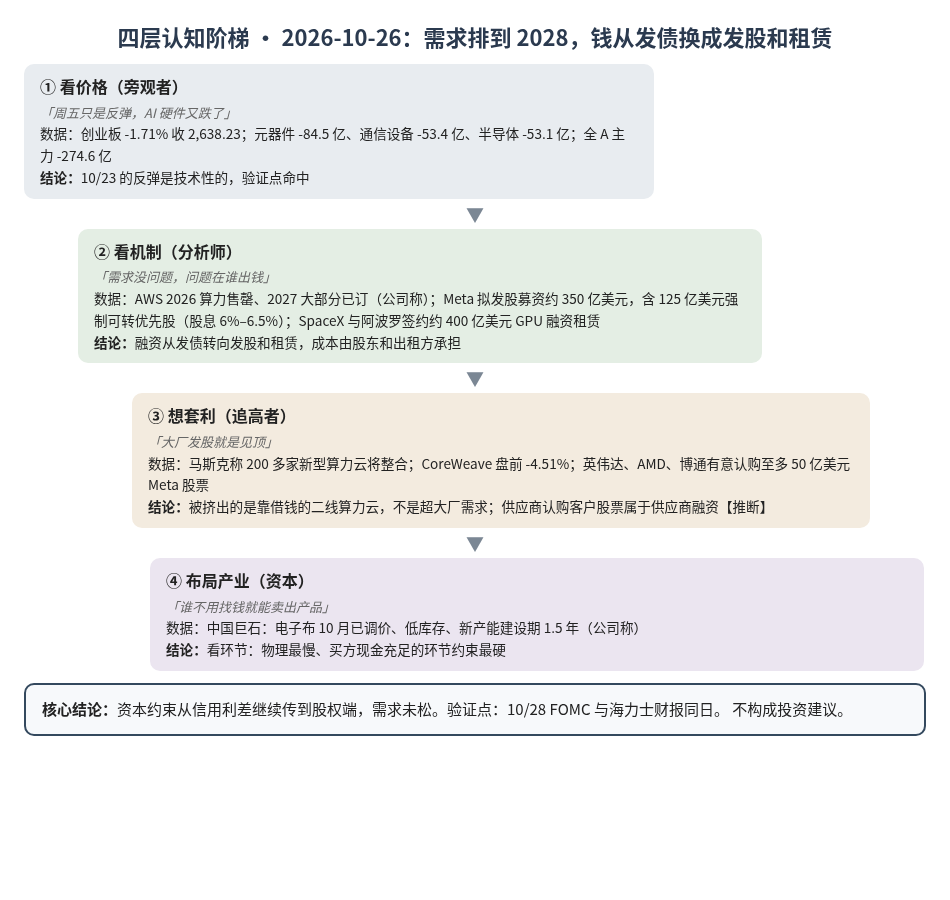
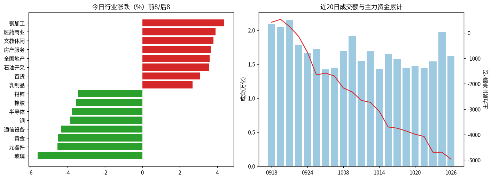
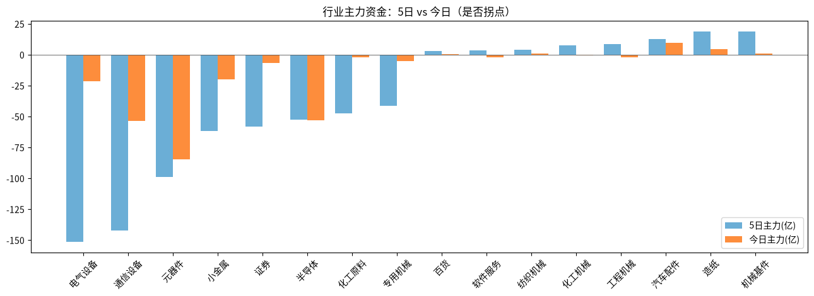

A股投研日报 · 2026-10-26（四层认知版）
- 主线
- 需求已排到 2028，钱从发债换成发股和租赁，挤出的是二线算力云
- 最重要变化点
- Meta 拟发股募资约 350 亿美元，SpaceX 签约约 400 亿美元 GPU 融资租赁；A 股 AI 硬件三板块主力合计 -191 亿元
- 机制含义
- 资本约束从信用利差传到股权端，成本由股东和出租方承担；需求端未松
- 下一个观察点
- 10/28 海力士财报与 FOMC 同日：营业利润明显低于一致预期 76.96 万亿韩元（10/23 口径）或加息，则 AI 链进入需求与资本双重检验
本报告为基于公开数据的研究分析，不构成投资建议。
今日市场概况
数据管道速览（Tushare 收盘数据，规则生成，正文判断见下文）
- 指数：上证指数 +0.19% 收 3,697.52，创业板指 -1.71% 收 2,638.23；深证成指 -1.19%、科创50 -2.23%、上证50 +0.41%、沪深300 -0.04%、中证500 -1.49%、中证1000 -1.54%（Tushare）。
- 量能与宽度：成交 16,231 亿元（20 日均 16,617 亿元）；上涨 2,252 家 / 下跌 3,157 家，上涨占比 40.4%，个股中位数 -0.5%。
- 主力资金：全 A 主力 -274.6 亿元，连续第 1 日净流出。
- 行业：主力流入居前 汽车配件（+9.7 亿）、医疗保健（+5.1 亿）、石油开采（+5.1 亿）；流出居前 元器件（-84.5 亿）、通信设备（-53.4 亿）、半导体（-53.1 亿）。
- 龙虎榜 / 北向：机构专用席位合计 +0.25 亿元；沪深股通成交前五 宁德时代、中际旭创、紫金矿业、药明康德、新易盛（成交额≠净买入）。
变化点
方法：四层认知阶梯 + 历史周期律。数据 Tushare（见附录）。不构成投资建议。
一、世界观定位
阶段判断不变：五盏灯仍为 4 黄 1 红（估值🔴），实际利率 2.64%（10/22）。CME 显示本周按兵不动概率 90%，12 月前加息 25bp 概率 68.9%（源）。布伦特盘前跌至约 110 美元（源），通胀端压力略缓。
二、变化一：融资从发债转向发股和租赁
10/23 判断资本约束从利率端转到信用端，今天看到了下一步：大厂开始用股权和租赁替代发债。
- 发股：Meta 拟募资约 350 亿美元，其中约 125 亿美元为强制可转换优先股，股息 6%–6.5%；英伟达、AMD、博通有意认购至多 50 亿美元（源）。供应商买客户股票，本质是供应商融资推断。
- 租赁：SpaceX 与阿波罗签约约 400 亿美元 GPU 融资租赁，阿波罗买设备再出租（源）。
- 挤出：马斯克称债务市场严峻，200 多家新型算力云将整合（源）；CoreWeave 盘前 -4.51%（源）。
- 需求：AWS 2026 算力售罄，2027 大部分已订，2028 也有相当部分获承诺（公司称，源）。
判断：需求没松，变的是谁出钱。超大厂能发股，二线算力云只能借贵钱或被并。订单质量向超大厂集中。
A 股在 Meta 消息之前已先跌：创业板 -1.71%，元器件 -84.5 亿、通信设备 -53.4 亿、半导体 -53.1 亿，上证靠权重收 +0.19%。周五反弹没有延续。
三、变化二：电子布紧，PCB 股却跌
中国巨石称电子布 10 月已调价，库存低位，供应紧张，新产能建设期 1.5 年，2027 供给增量难匹配需求（公司称，源）。同日元件板块大跌，覆铜板公司领跌（源）。股价跟的是 AI 硬件风险偏好，基本面信号指向上游材料仍紧，支持 G27、G23。口径是电子布整体，不直接验证二代布的 G31。
四、上一交易日验证点回顾（10/23 → 10/26）
| 验证点 | 结果 |
|---|---|
| 通信设备+元器件 < -50 亿 | 命中：-137.9 亿，周五为技术性反弹 |
| 创业板守 2,650 / 破 2,576.90 | 未守 2,650（2,638.23），未破 2,576.90 |
| 10Y 连续 2 日 < 5.0% | 待补充：10/22 为 4.96%，10/23 数据未出 |
| 10/28 海力士与 FOMC | 待验证 |
五、供应链风险敞口（人工复核版）
脚本版见 risk_section_20261026.md。口径为 GB300/NVL72 当量柜年化系统价值；Δ$ 为事件类型假设模板，仅用于排序，非预测。今日 3 条命中均为误匹配（调价、量产计划、股价），有效 Δ$≈0，基线维持年化 EL 57.7 亿美元（10/21）。采集降级，部分来源超时。
六、机会表（产业/环节层面，不构成投资建议）
| 环节 | 逻辑 | 证伪条件 |
|---|---|---|
| 电子布/玻纤布 | 调价落地、扩产需 1.5 年 | 2027 内出现电子布降价报道 |
| 超大厂直供链 | 订单向能发股的买家集中 | 四大 2027 指引低于 2026 |
中长期展望（3–12 个月与 2027）
3–12 个月：AWS 订单排到 2028，支持 G12、G25；约束沿 HBM→CoWoS→载板迁移（G19）。节奏变量从信用利差扩展到股权融资成本推断，估值灯🔴。
2027：总闸门仍是四大云厂商 2027 资本开支指引（P023：合计 ≥8,500 亿美元，概率初稿 55%）。
什么会改变展望：①Meta 发行明显折价或缩量，股权端也收紧；②出现算力云违约或租赁项目取消，下调节奏判断；③四大 2027 指引低于 2026，G12、G25 受挑战。
七、明日/本周验证点（可证伪）
- 10/27 通信设备 + 元器件主力合计仍 < -50 亿元，则 AI 硬件调整延续。
- 创业板收复 2,650 为止跌确认；跌破 2,576.90 则反弹失败。
- 10/28 海力士营业利润明显低于一致预期 76.96 万亿韩元（10/23 口径）或 FOMC 加息，则 AI 链进入需求与资本双重检验。
- 本周 CoreWeave 等算力云再跌超 10% 或出现融资失败报道，则挤出加速。

一句话总结：需求排到 2028，钱从借的变成股东出的；挤出的是二线算力云。
本报告为基于公开数据的研究分析，不构成任何投资建议。
附录：市场数据（证据底稿）


| 收盘 | 今日% | 5日% | 20日% | MA20 | 成交(亿) | |
|---|---|---|---|---|---|---|
| 上证指数 | 3,697.52 | 0.19 | -0.90 | -5.48 | 3,793.17 | 7,465.28 |
| 深证成指 | 11,534.38 | -1.19 | -2.40 | -15.44 | 12,433.74 | 4,391.84 |
| 创业板指 | 2,638.23 | -1.71 | -3.93 | -21.78 | 2,969.48 | 1,746.04 |
| 科创50 | 1,315.50 | -2.23 | -1.03 | -20.40 | 1,455.41 | 816.97 |
| 上证50 | 2,769.05 | 0.41 | -0.19 | -3.21 | 2,802.05 | 1,408.69 |
| 沪深300 | 4,103.54 | -0.04 | -1.70 | -8.96 | 4,275.67 | 4,562.47 |
| 中证500 | 6,712.73 | -1.49 | -1.29 | -13.94 | 7,161.86 | 2,785.02 |
| 中证1000 | 6,630.78 | -1.54 | -1.01 | -13.75 | 7,077.67 | 3,167.61 |
行业资金热力（按5日主力净额排序，前8/后8）
| industry | 今日% | 5日% | 20日% | 今日主力(亿) | 5日主力(亿) | 资金连续天数 |
|---|---|---|---|---|---|---|
| 机械基件 | -1.7 | 8.1 | 14.3 | 0.8 | 18.8 | 3.0 |
| 造纸 | -1.6 | -6.0 | -4.1 | 4.4 | 18.6 | 21.0 |
| 汽车配件 | 0.6 | 5.3 | 8.7 | 9.7 | 12.7 | 2.0 |
| 工程机械 | -1.5 | 3.8 | -1.8 | -2.0 | 8.7 | -1.0 |
| 化工机械 | -1.0 | 4.6 | -11.3 | -0.8 | 7.5 | -1.0 |
| 纺织机械 | 2.1 | 14.3 | 210.5 | 1.1 | 4.0 | 2.0 |
| 软件服务 | 0.2 | 8.6 | 12.4 | -2.0 | 3.4 | -1.0 |
| 百货 | 3.1 | 7.8 | 0.6 | 0.3 | 3.2 | 2.0 |
| 电气设备 | -1.4 | -4.0 | -9.3 | -21.3 | -151.3 | -1.0 |
| 通信设备 | -4.3 | -5.7 | -27.0 | -53.4 | -142.0 | -1.0 |
| 元器件 | -4.5 | -2.1 | -18.1 | -84.5 | -98.7 | -1.0 |
| 小金属 | -3.1 | -3.3 | 30.4 | -19.9 | -61.6 | -11.0 |
| 证券 | 0.4 | -1.6 | -0.4 | -6.6 | -58.1 | -1.0 |
| 半导体 | -3.8 | 0.3 | 10.3 | -53.1 | -52.6 | -1.0 |
| 化工原料 | 0.0 | -2.4 | -10.2 | -1.9 | -47.3 | -11.0 |
| 专用机械 | -1.2 | 1.5 | -0.9 | -5.1 | -41.4 | -3.0 |
市场情绪时间序列（近10日）
| trade_date | 成交(亿) | 上涨占比% | 主力净额(亿) | 个股中位涨跌% |
|---|---|---|---|---|
| 20261013 | 16889.1 | 52.3 | -76.8 | 0.2 |
| 20261014 | 14264.0 | 17.6 | -348.2 | -1.9 |
| 20261015 | 16457.2 | 7.7 | -620.8 | -3.0 |
| 20261016 | 15690.7 | 59.3 | -47.2 | 0.5 |
| 20261019 | 14487.9 | 40.9 | -111.4 | -0.4 |
| 20261020 | 14715.3 | 67.9 | -127.9 | 1.0 |
| 20261021 | 14420.6 | 35.6 | -86.3 | -0.4 |
| 20261022 | 15418.6 | 9.6 | -623.7 | -2.5 |
| 20261023 | 19728.5 | 81.2 | 4.3 | 1.6 |
| 20261026 | 16230.9 | 40.4 | -274.6 | -0.5 |
今日上涨2252家/下跌3157家，涨幅≥9.8% 77家、跌幅≤-9.8% 55家¹。
龙虎榜侧写：机构专用席位合计 +0.25 亿；净买入居前 宇树科技(+8.02亿)、粤芯半导体(+2.27亿)、上纬新材(+2.08亿)，净卖出居前 华依科技(-2.75亿)、新亚制程(-1.95亿)、超声电子(-1.70亿)。 沪深股通活跃股：成交前五为宁德时代、中际旭创、紫金矿业、药明康德、新易盛（成交额≠净买入）。
注：¹涨跌停为按±9.8%阈值近似（limit_list_d无权限）。²行业为Tushare stock_basic分类自行聚合（sw_daily/ths_daily/行业资金流接口无权限），成交加权、剔除N/C新股，成分≥8只。³主力=大单+特大单净额（moneyflow）。⁴2024年8月起北向每日净买入停止披露，moneyflow_hsgt/hsgt_top10数值为成交口径，不可解读为净流入。⁵新闻/公告接口无权限，改用新浪财经7x24公开快讯自动抓取+人工补充。
接口状态：trade_cal:OK；stock_basic:OK；index_daily:OK；moneyflow_hsgt:OK；hsgt_top10:OK；top_list:OK；top_inst:OK；index_dailybasic:OK；新浪7x24(公开):OK 3986条（10-23 18:55 起）